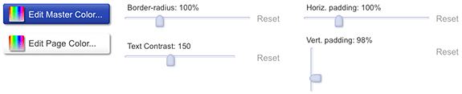
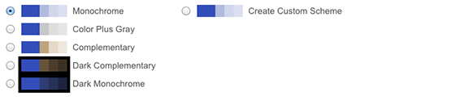
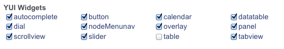
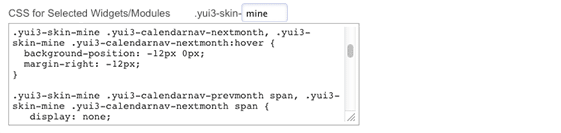
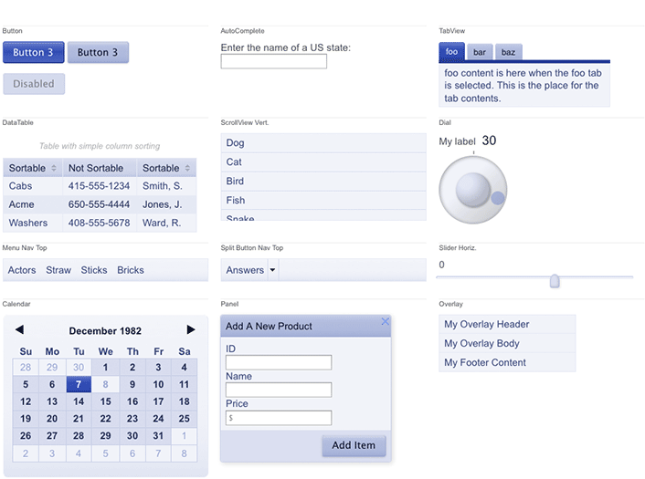
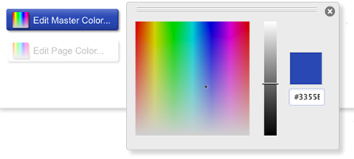
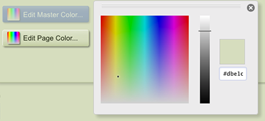
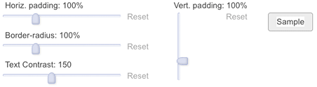
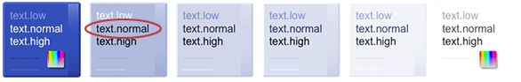

Overview
Use this tool to create or modify skins for YUI Widgets, with real-time previewing. A skin is the visual presentation of something, not its features or function. Use YUI Skin Builder.Main Parts of the Tool
There are 2 main parts to the Skin Builder UI.
- Control Tabs
- Skin Preview
Control Tabs
Toward the top of YUI Skin Builder is an area with 5 tabs-  Style: This displays buttons for changing the key colors of the skin. You can change the border-radius, padding, and text contrast styles in the skin.
-  Schemes: From this tab, you can select one of several color schemes, or start creating your own custom scheme. Color schemes set different relationships between the colors shown in the palette tab. More explanation about schemes later.
-  Items: This contains checkboxes for each of the available widgets and modules that are available for skinning.
-

Code: This tab contains text area controls that display the real-time generated CSS code for your skin as you make modifications. You can also change the skin name, which marks all the selectors in the CSS code.
The Code tab also includes a Link button which captures all the current skin settings into a URL. You can save it somewhere or bookmark it to get back to where you left off. You can also share it with others.
Skin Preview
At the bottom of Skin Builder is an array of real instances of each of the YUI 3 Widgets selected in the "Items" tab. Their skin/appearance is continually updated with the latest changes you make in the Control Tabs.
A Typical Use Pattern
- During all the following steps, keep an eye on the Widget previews, evaluating the results of your changes.
- Open the Style tab.
- Click Edit Master Color... button. The color you select should match a very dominant color from the app these widgets will appear in. For example if these skinned widgets will go on a site that has green as a high emphasis, attention attracting color, choose that same green from this color picker. You'll notice the other colors in the palette change automatically. They change to relative colors based on relationships to the "highest/master" color. These relationships are called "schemes".
- Click the Edit Page Color... button (if your page background color isn't white). From the Color Picker that pops up, select a color that matches the background color the widgets will display on. This is commonly the page background, but may be a container object that widgets will appear in. You can also enter the color directly with a hex value if you know it.
- Make any changes needed to the padding and border-radius styles. You can adjust the contrast between the text and its background. This adjustment can help maintain readability.
- Click the Schemes tab. Try other schemes to see which works best for your site. If you choose a dark background scheme, you may need to select a different "highest/master" color from the palettes tab
- Edit the Skin Name suffix. In the markup of your site or app where widgets are to use this skin, replace the class "yui3-skin-sam" with the matching new class name, such as, "yui3-skin-myskinnamesuffix".
- Select the contents of the textarea labeled "CSS for all widgets". Paste this code into the file wherever you want your CSS to be referenced from. If you don't need CSS skin code for all the YUI 3 widgets, you can pick out and use only the sections of the CSS you do need.
- Click the Link button shown in step 7. Save this URL somewhere so you can make future edits starting where you left off. Share it with others.
Examples
Here are a couple screenshots of using YUI Skin Builder to edit/create YUI Widget skins to match existing sites.
How Does It Work?
Successfully applying colors to objects (skinning) is a process of applying the colors that will give the objects their correct visual emphasis for their function relative to other objects. Skin Builder provides a palette of colors arranged by emphasis, and then logically maps those colors onto the backgrounds, borders, and text of each part of YUI widgets and components according to their function. It then allows you to manipulate the color palette in several ways that provide infinite variety of colors while giving instant preview feedback.Key color
This is a user-selected color. It's the color that has the most emphasis in the skin. It will be used as the background color of visually dominant widget elements such as, primary or default buttons, or selected tabs. In the Palette, it is presented as the background color of the "highest"Main colors
There are 6 Main Colors used in this tool. From left to right, their names are...- Highest
- High
- Normal
- Low
- Lowest
- Page
Main colors "Highest" through "Lowest" are designed to hold colors of decreasing visual emphasis. The main color "Page" is the background color of the page or container the widgets will be viewed on in the final app or web page. Each of these main colors represents a family of colors that are used to color widgets.
Color scheme
A Color Scheme is a data structure that holds information about the relationship of each main color to the Key Color. The Main color "Highest" always has the same value color value as the Key Color. The value of the main color "high" might be calculated like this: Start with the key color, and adjust its hue by 0, its saturation down by 30%, and its lightness up by 20%. The value of the main color "normal" might be calculated like this: Start with the key color, and adjust its hue by 0, its saturation down by 30%, and its lightness up by 30%. Etc. A Color Scheme data structure looks like this...
Y.ColorSpace.schemes.monochrome = {
container: {h:0, s:0, l:0}, // the page or container
highest: {h:0, s:-30, l:60},
high: {h:0, s:-30, l:60},
normal: {h:0, s:-30, l:75},
low: {h:0, s:-30, l:80},
lowest: {h:0, s:-30, l:90}
};
Foreground Colors
Each main color has an associated set of named, foreground colors:- Text-high
- Text-normal
- Text-low
- Rule-high
- Rule-low
- Border-high
- Border-low
- Gradient
The text colors have special algorithms applied to them to keep them readable given any background color.
Hover Colors
Since many widgets have objects that require visual feedback on user interaction, we provide a set of hover colors for the hover state of elements. The hover color is calculated from each of the main colors. It's a child of its parent main color. Each hover color also has a full set of foreground colors.Space/palette
The Space/palette is a nested data structure collection of all the color values available for use in a particular skin. These values include all main colors, hover colors, and foreground colors. The space/palette object literal in JSON form, contains nested key-value pairs. The values are colors in hex format that looks like this.
Skin.PALETTE = {
block: {
highest: {
background: '#3355BA',
gradient: '',
border: {
low: '#0B2981',
high: '#6680CC'
},
text: {
low: '#708EE6',
normal: '#D9E2FF',
high: '#ffffff'
},
rule: {
low: '#223A80',
high: '#4A69C4'
},
hover: { // the hover color and its foreground colors
background: '#1B3A95',
gradient: '',
border: {
low: '#041D67',
high: '#6680CC'
},
text: {
low: '#5675CF',
normal: '#EFF3FF',
high: '#fff'
},
rule: {
low: '#162D6F',
high: '#314D9F'
}
}
// next would be the other main colors,
// "high", "normal", "low", "lowest", and "page"
}
};
Color Mapping
Each YUI Widget has a color map file, which defines variable names and set their value equal to a color, padding, or radius value in the skin palette.
YUI.add('skin-tabview', function (Y) {
Y.Skin.renderers.tabview = function (skin) {
var space = skin.colorspace,
block = skin.colorspace.block;
return {
paddingTab: skin.padding(0.3, 0.75),
paddingTabSelected: skin.padding(0.4, 0.75),
paddingPanel: skin.padding(0.25, 0.5),
tabRadius: skin.radius(0.4), // 40% of global radius
tabBackground: block.high.background,
tabGradient: block.high.gradient,
tabText: block.high.text.normal, // Example variable is here
tabBorderLow: block.high.border.low,
tabBorderHigh: block.high.border.high,
tabHoverBackground: block.high.hover.background,
tabHoverGradient: block.high.hover.gradient,
tabHoverText: block.high.hover.text.normal,
tabHoverBorderLow: block.high.hover.border.low,
tabHoverBorderHigh: block.high.hover.border.high,
For example: The mapping file for the TabView widget is named skin-tabview.js. One of the variables you can see in the snippet above is named "tabText". Its value is equal to (mapped to) the color stored in the skin object "block.high.text.normal". This is the normal text color in the "high" main color that you can see (circled) in the palette of this tool.
YUI Skin Builder has CSS style code templates for each widget. At the bottom of the template snippet below, you can see where the variable "tabText" is used.
...
{{prefix}}{{skinName}} {{prefix}}tab-label {
{{tabGradient}};
background-color: {{tabBackground}};
border-style: solid;
border-color: {{tabBorderHigh}} {{tabBorderLow}} {{tabBorderLow}} {{tabBorderHigh}};
border-width: 1px 1px 0 1px;
cursor:pointer;
font-size: 85%;
padding: {{paddingTab}};
text-decoration:none;
border-radius: {{tabRadius}} {{tabRadius}} 0 0;
color: {{tabText}}; /****** The variable in the example is here */
}
...
When the CSS templates are processed, the variables are replaced.
.yui3-skin-mine .yui3-tab-label {
/* omitting a lot of gradient CSS here for this example */
background-color: #b0bcdd;
border-style: solid;
border-color: #d1d8eb #a6b3d9 #a6b3d9 #d1d8eb;
border-width: 1px 1px 0 1px;
cursor:pointer;
font-size:85%;
padding: 0.29em 0.75em; /*0.3em .75em;*/
text-decoration:none;
border-radius: 4px 4px 0 0;
color: #0e1320; /****** The variable has been replaced */
}
The YUI Widgets Preview uses this CSS and it's output in the code tab of the YUI Skin Builder for your use.